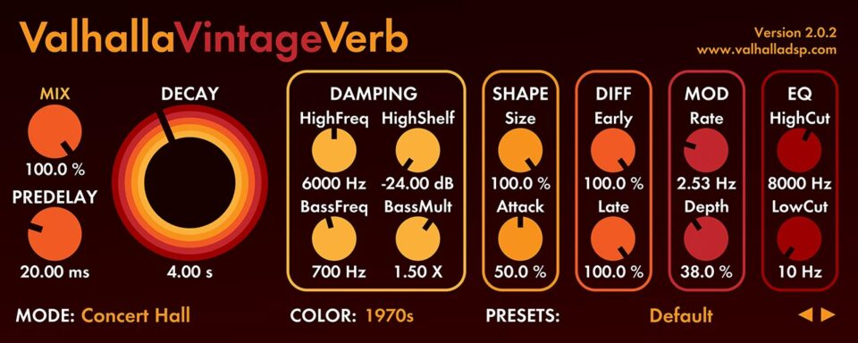
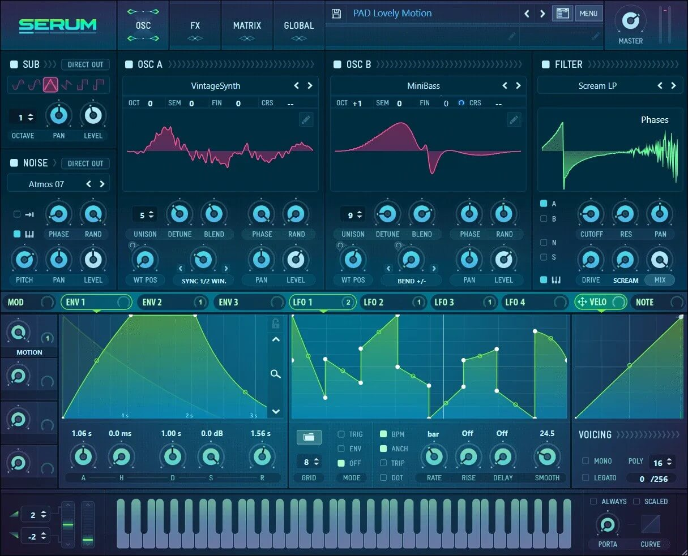
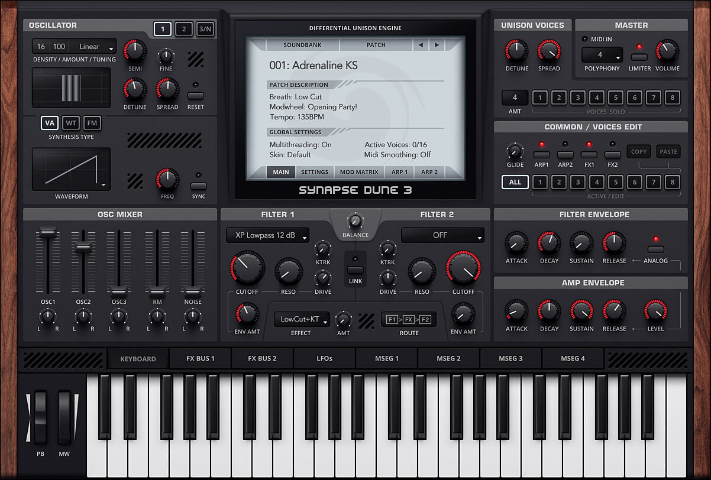
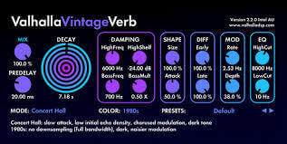
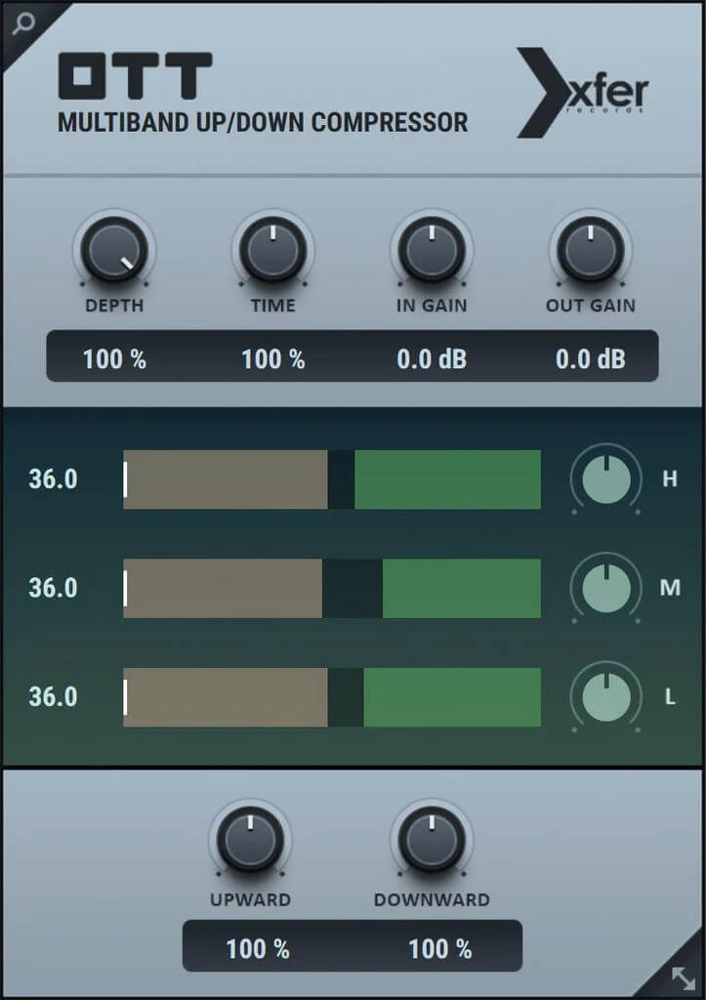
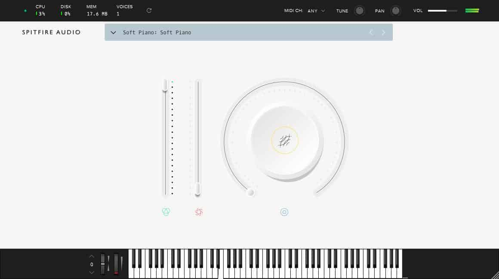
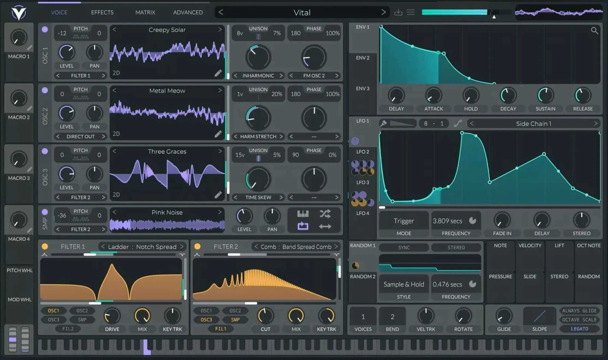

Production Tips
- Listen To Other Tracks: It is always important to look at other's music within the genre you are making. Seeing certain patterns, commonly used sounds, techniques, and just getting fresh ideas for your music.
- Understand EQ: Learning equalization and how to carve out space for everything in your mix might single-handedly the most important thing in music. You could have the best melody and drums in the world, but without proper equalization and mixing, it will sound terrible.
- Don't Overthink It: Do not overcomplicate things for yourself, if you think something sounds good, then use it, if you think it sounds bad, then don't. If you have a simple section that works very well, but you feel like it doesn't have enough, don't add. Less is more in music. Of course this does not mean that you shouldn't make complicated music, just balance the use of simplicity and complexity well.
- Don't Box Yourself: Be creative about your music, don't be afraid to try very different elements together, it might not work, or you might get an extremely beautiful sound melody, or a very unique drum pattern. Basically, do whatever's on your mind.
Paid Plugins:
-  Valhalla VintageVerb is a very high-quality reverb plugin that will add beautiful spaces to your melodies. it has many pre-made presets and can also be used for drums.
-  Serum is one of, if not the most used synth plugins in the music world. It has limitless potential, is very user-friendly, and has control over everything that makes a sound, well a sound.
-  Dune 3 is a fantastic instrumental plugin that provides a huge bank of presets spanning a variety of genres, ranging from Techno, to House, Trap, Ambient, etc. It is a worthwhile plugin.
Free Plugins
-  Valhalla Valhalla Supermassive is a perfect free alternative to VintageVerb, it is made by the same company and provides just as many unique presets. Although there is not as much control, it is still fantastic.
-  Xfer OTT is a must plugin for anyone who uses multiband compression. It is used by many professional mixers and producers as it provides great punch and dynamic ranges for single elements or the entire track.
-  Spitfire Audio LABS offers a collection of free, high-quality virtual instruments through their LABS series. These instruments cover a wide range of sounds, from pianos and strings to experimental textures, making them a great resource for adding unique and professional-sounding elements to your music.
-  vital is a free wavetable synthesizer that offers professional-quality sound design capabilities. It features an intuitive interface and a robust set of tools for crafting unique sounds, making it a must-have for any producer looking to expand their sonic palette without breaking the bank.